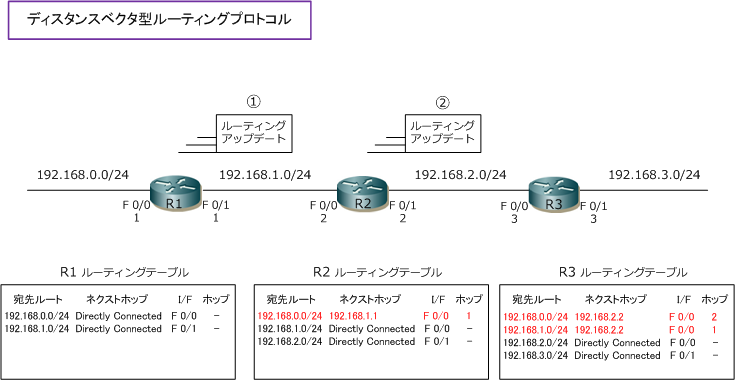
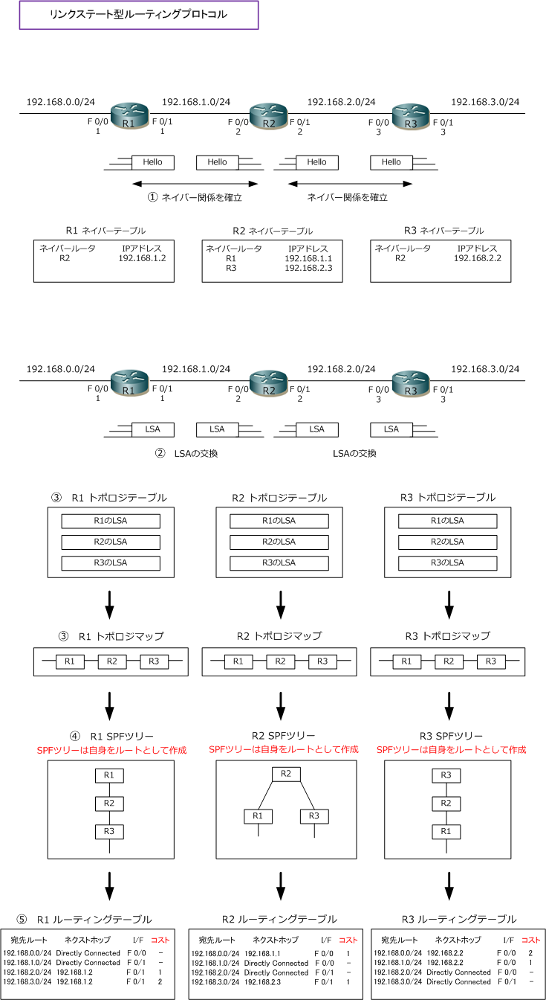

OSPF - Link State Routing
IGPのダイナミックルーティングプロトコルの2つのタイプ
IGPのダイナミックルーティングプロトコルには2つのタイプのルーティングプロトコルがあります。1つは ディスタンスベクタ型ルーティングプロトコルです。もう１つはリンクステート型ルーティングプロトコル。
リンクステート型ルーティングプロトコルには、OSPFとIS-ISがあります。日本の企業ネットワークで最も 使用されているリンクステート型ルーティングプロトコルはOSPFです。ちなみに、ディスタンスベクタ型、 リンクステート型以外にもCisco社独自のハイブリッド型（拡張ディスタンスベクタ型）というのもあります。
ディスタンスベクタ型プロトコルのRIPでは、最大ホップ数が15であり拡張性がない点、VLSMに対応して いない点、コンバージェンス（収束）が遅い点などから大規模なネットワークには適していません。そこで、 大規模なネットワーク用として以下に紹介するリンクステート型ルーティングプロトコルが開発されました。 リンクステート型ルーティングプロトコルではホップ数制限がなく、拡張性もあり、収束も高速になります。
リンクステート型ルーティングプロトコルとは
ディスタンスベクタ型ルーティングプロトコルの場合、下図の通り「自身のルーティングテーブルに、隣の ルータから通知されたルーティングアップデートの情報をそのまま追加していく」という単純な方式でした。

リンクステート型ルーティングプロトコルではルーティングテーブル作成のために次のステップを踏みます。
?@ Helloパケットを送信し合い、隣接ルータとネイバー関係を確立し、ネイバーテーブルを作成。 ?A 全体のネットワーク構成を知るために、そのネットワーク上の全てのルータから情報（LSA）を収集。 ?B その収集したLSAをトポロジテーブルに格納する。そして、その情報からトポロジマップを作成。 ?C そのトポロジマップから、SPFアルゴリズムによりSPFツリーと呼ばれるネットワーク構成図を作成。 ?D そのSPFツリーから最短経路を計算し、最短パスをルーティングテーブルに登録。
LSA （Link State Advertisement）には、ルータの I/F のIPアドレス情報、そのルータのリンクに関する情報などが含まれます。

上図のトポロジテーブルは、OSPFでは LSDB（ Link State Database ）とも呼ばれています。
ディスタンスベクタ型ルーティングプロトコルでは、30秒間隔で全ての経路情報をアップデートしますが リンクステート型ルーティングプロトコルでは、30分間隔でLSAごとに同期を行うので負荷が少ないです。
リンクステート型ルーティングプロトコルではトポロジに変更があった場合、トリガードアップデートで 即時にLSAをネットワーク内の全てのルータにアドバタイズします。そのLSAを受信した各ルータは、その LSAをトポロジテーブルに格納 ⇒ トポロジマップの作成 ⇒ SPFツリーの作成 ⇒ ルーティングテーブルの 更新を行います。トポロジチェンジの際は変更部分だけを差分アップデートするので帯域消費が少ないです。